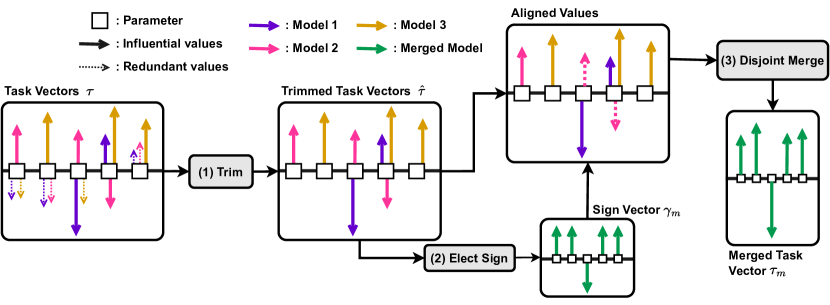

基座模型Base
模型融合与能力组合
蒸馏要训练，量化要校准——而模型融合可以「免训练」地把几个微调模型的能力叠加起来。多个 LoRA 合并成一个全量模型、多个微调版本取权重平均……这些操作在生产里已经是常规操作，但它们为什么有效、什么时候会失效、有哪些方法谱系，值得拆开看。
一图看懂
核心思想：几个模型共享同一个基座，它们学到的能力可以看作基座权重上的「增量」。融合就是把增量按某种规则组合——直接平均、向量加减、按符号投票——最后得到同时拥有多种能力的一个模型，全程不需要反向传播。
- 微调A写作能力
- 基座模型 / Base
微调B代码能力- 基座模型 / Base
微调C多语言能力- 基座模型 / Base
- 融合规则平均 / 任务向量 / 投票
- 微调A / 写作能力
- 微调B / 代码能力
- 微调C / 多语言能力
- 组合模型同时具备 A+B+C
- 融合规则 / 平均 / 任务向量 / 投票
一、为什么权重平均会有效
这看起来违反直觉：神经网络是非线性的，「两个模型的权重平均」凭什么不是劣化而是增益？近年研究给出的解释是线性模式连通（LMC）：当模型从同一基座、用相近数据分布微调时，损失地形里存在一条「近直线」的谷底——这条谷把两个局部最优连在一起，谷上任意点（包括权重平均点）损失都低。换句话说，这些模型的权重落在一个几乎连通的平坦区域里，平均是「走捷径」而非「跨悬崖」。
- 基座权重基座 X微调 A
- 微调 A损失低
- 基座权重
基座 Y微调 B- 基座 X / 微调 A跨悬崖
- 微调 B损失低
- 基座权重
- 微调 A / 损失低近直线谷底
平均点掉进无关区域 ✗- 基座 X / 微调 A
- 基座 Y / 微调 B
- 平均点损失也低 ✓
- 微调 A / 损失低
- 微调 B / 损失低
这个性质有三个实际含义：一是同基座是硬前提——不同基座平均会掉进不相干的区域；二是微调增量要小（学习率低、步数少），大增量会破坏连通性；三是微调方向越接近，连通越好。
还有一个反直觉的点：平均不仅「不坏」，有时比任何一个成员都好。原因在于随机梯度下降的噪声——每个微调版本都在各自局部最优附近抖动，平均能把「抖掉」的噪声抹平，得到一个更接近谷底的落点。这也是为什么同一个任务多跑几个随机种子、再做 Model Soup，经常能白捡一到两个百分点的提升，却不需要任何额外训练。
常见误区
看到「平均有用」就以为可以随便平均。全量微调大模型（而非 LoRA）之间的平均，因增量大、区域不连通，效果往往远差于 LoRA 版本。生产实践里的模型融合，绝大多数发生在 LoRA 层。
二、五种主流融合方法
融合方法的差异在于「怎么组合增量」。先看统一视角：每个微调模型可以写成「基座 + 任务向量」，融合就是在基座上按规则组合任务向量。
五种方法里，TIES 是当前多任务融合的默认首选。下面这张是 TIES-Merging 论文的原图，它把「符号冲突」这个问题可视化得非常清楚，也是理解融合为什么不能简单平均的关键——值得花两分钟逐块读懂。

读这张图的关键是「方块 + 箭头」的约定：每个方块代表模型里的一个参数，方块里的箭头代表某个任务微调给这个参数带来的更新（任务向量），箭头朝右表示正向更新、朝左表示负向更新，箭头长短表示幅度大小，不同颜色代表不同任务。图里的每一行方块，就是「同一个参数在三个任务下的更新」——想象三个微调模型，各自在同一个参数位置上给出自己的增量。
往右看三步的处理。第一步 Trim（剪裁）：把幅度太小的箭头清掉（图里表现为只剩那些最长的箭头），因为大量幅度小的分量是噪声，留着只会干扰后续判断。第二步 Elect Sign（符号表决）：对每个参数，看剩下的箭头朝哪个方向的「票数」多——比如三个任务里两个朝右一个朝左，就投出「朝右」这个多数方向。第三步 Merge（合并）：只把方向与表决结果一致的箭头拿来平均，方向相反的那个直接丢弃。注意最后一步正是和「算术平均」的分水岭：算术平均会把「两个朝右一个朝左」抵消成一小段朝右，而 TIES 先投票决定方向、再只按多数方向平均。
这张图同时解释了融合失效的一个核心场景：当两个任务在同一个参数上「杠上」时（一个要加、一个要减），简单平均会互相抵消，而 TIES 用符号表决打破了僵局。回到本页第一节的「线性模式连通」：连通谷底保证了「沿谷底走」不会掉出去，TIES 则负责在谷底内找一个「多任务都能接受」的方向。两者一个回答「为什么能融合」，一个回答「怎么融合才能不打架」，正好拼成模型融合的完整拼图。
- 基座权重
- 微调后权重 A= 基座 + ΔA
- 基座权重
微调后权重 B= 基座 + ΔB- 基座权重
- 任务向量 ΔA
- 微调后权重 A / = 基座 + ΔA
任务向量 ΔB- 微调后权重 B / = 基座 + ΔB
- 合并规则
- 任务向量 ΔA
- 任务向量 ΔB
- 组合权重基座 + Δ*
- 合并规则
| 方法 | 做法 | 特点 | 适用场景 |
|---|---|---|---|
| Model Soup（权重平均） | 直接对多个模型的权重逐参数取平均 | 最简单；性能稳定提升，但能力易被「平均掉」 | 多个同任务微调版本合并 |
| Task Arithmetic | 任务向量 = 微调后权重 − 基座权重；合并时按需加减任务向量 | 可「加能力」也可「减能力」，语义直观 | 能力组合与消除 |
| TIES | 先对任务向量取 Top-k，再对符号做多数投票，最后合并幅度 | 解决任务向量互相冲突的问题，融合更稳 | 多任务融合（默认首选） |
| DARE | 随机丢弃大部分任务向量分量（如 90%），其余放缩后合并 | 发现大部分 delta 是冗余的，稀疏化后更干净 | 大规模融合 |
| SLERP | 在超球面上做球面线性插值 | 避免权重幅值被平均拉低，常用于两模型融合 | 两模型高质量融合 |
核心主题融合方法谱系
01简单高效
- Model Soup
- 逐参数取平均
- Task Arithmetic
- 任务向量加减
02高稳定
- TIES
- trim 加 符号投票 加 合并
- DARE
- 丢弃 加 放缩 加 合并
03质量优先
- SLERP
- 球面插值
三、LoRA 融合：生产实践的主角
生产环境的模型融合绝大多数发生在 LoRA 层，原因有二：一是 LoRA 增量小，满足线性模式连通的前提；二是 LoRA 权重可以独立分发、按需加载，融合非常灵活。
3.1 合并 LoRA 到全量模型
LoRA 的思路是冻结基座权重，只训练低秩增量 $\Delta W = B A$。合并就是把增量加回基座：$W' = W_0 + \alpha \cdot BA$。多个 LoRA 可以按系数叠加：
import torch
def merge_lora(base_weight, lora_a_list, lora_b_list,
alphas=None, scaling=1.0):
"""把多个 LoRA 合并回基座权重
Args:
base_weight: 基座权重矩阵 W0
lora_a_list: 多个 LoRA 的 A 矩阵列表
lora_b_list: 多个 LoRA 的 B 矩阵列表
alphas: 每个 LoRA 的融合系数（默认全 1）
scaling: 全局缩放
Returns:
融合后的权重 W'
"""
n = len(lora_a_list)
if alphas is None:
alphas = [1.0] * n
delta = torch.zeros_like(base_weight)
for i in range(n):
# LoRA 增量 = BA，乘系数后累加
delta += alphas[i] * (lora_b_list[i] @ lora_a_list[i])
return base_weight + scaling * delta
# 使用示例：合并「代码增强」和「写作增强」两个 LoRA
merged = merge_lora(
base_weight=model.layers[0].self_attn.q_proj.weight,
lora_a_list=[code_lora_a, writing_lora_a],
lora_b_list=[code_lora_b, writing_lora_b],
alphas=[0.8, 0.6], # 代码能力权重更高
scaling=1.0
)注意：多个 LoRA 合并时，系数相加不必等于 1——可以给不同能力分配不同权重。但系数过大（>1.5）可能破坏基座能力，需要验证集调参。
一个常见的生产陷阱是「三个以上 LoRA 直接相加」。两个 LoRA 平均通常没问题，但五个、十个叠加后，增量噪声相互累加，基座能力会被逐渐稀释。实践中超过三个 LoRA 时，几乎都会退一步用 TIES 或 DARE 这类带「稀疏化」的合并——先砍掉大量冗余分量，再合并，避免噪声被线性累加。这与「先平均再调参」的思路相反，是更高并发融合的正确姿势。
3.2 LoRA 融合的典型工作流
sequenceDiagram
participant B as 基座模型
participant A as LoRA-A（任务 A）
participant C as LoRA-B（任务 B）
participant M as 合并策略
participant V as 验证集评估
B->>A: 用任务 A 数据微调
B->>C: 用任务 B 数据微调
A->>M: 提交任务向量 ΔA
C->>M: 提交任务向量 ΔB
M->>M: TIES / TaskArith / 加权平均
M->>V: 提交融合权重
V->>V: A/B 能力 + 基座能力
alt A/B 达标
V->>B: 部署融合模型
else 不达标
V-->>M: 调整系数 / 换策略，重试
end
四、任务向量：加能力与减能力
Task Arithmetic 把融合变成「向量运算」，提供了语义直观的操控手段。定义一个任务向量 $\tau = \theta_{\text{ft}} - \theta_{\text{base}}$，它编码了「为了任务 A 学到的方向」。然后：
- 加能力：$\theta^* = \theta_{\text{base}} + \lambda_1 \tau_1 + \lambda_2 \tau_2$——同时拥有任务 1 和任务 2 的能力；
- 减能力：$\theta^* = \theta_{\text{base}} - \lambda \tau$——去掉某个不希望的能力（如去偏、去毒）；
- 否定运算：$\theta^* = \theta_{\text{base}} + \lambda(\tau_A - \tau_B)$——「有 A 而不要 B」的相对调整。
减能力的场景常被忽略，但其实非常实用。把「去偏、去毒」微调得到的任务向量 τ_安全 加回到普通模型上，就是一次免训练的「安全升级」，比重跑一遍 RLHF 便宜得多；反过来，从模型上减掉它则常用于研究——验证安全对齐到底改变了权重的哪部分。任务向量天然可逆，这正是它区别于「重新训练」的最大价值：任何一次加法都可以撤销，实验成本几乎为零。
- θ_base + τ_代码 + τ_写作θ_base − λ·τ_毒语θ_base + λ(τ_A − τ_B)
- 同时具备代码 + 写作能力
- θ_base + τ_代码 + τ_写作
去除毒性输出- θ_base − λ·τ_毒语
拥有 A 而弱化 B- θ_base + λ(τ_A − τ_B)
展开：手算一个两任务的 TIES 合并全过程
用 4 个参数位置的玩具例子，把 TIES 的 trim → elect sign → merge 三步完整算一遍。假设基座权重为 $W_0$，两个任务微调后得到的任务向量（增量）如下，每个数字表示「该任务在这个参数上想加多少」：
| 参数位置 | 任务 A 的增量 | 任务 B 的增量 | 算术平均结果 | TIES 表决后 |
|---|---|---|---|---|
| w₁ | +0.8 | +0.6 | +0.7 | +0.7（同向，直接平均） |
| w₂ | +0.7 | −0.5 | +0.1 | +0.7（多数为 +，丢弃 −0.5） |
| w₃ | +0.02 | +0.03 | +0.025 | 0（trim 后幅度过小被清零） |
| w₄ | −0.9 | +0.1 | −0.4 | −0.9（多数为 −，丢弃 +0.1） |
先看 w₂：两个任务一个要加 0.7、一个要减 0.5，算术平均只剩 +0.1——几乎被抵消，这意味着「任务 A 想加强的能力」在融合后形同虚设。TIES 的符号表决把「+」判为多数方向，然后只拿幅度同为正向的值做平均，得到 +0.7，完整保留了任务 A 的意图。再看 w₃：两个增量都很小（0.02 和 0.03），trim 阶段直接当噪声清零，避免这种「微弱的随机扰动」污染权重。
最后看 w₄：这里有个容易忽略的细节——多数方向是「−」（A 要减 0.9，B 要加 0.1），所以表决结果是「−」，合并时取与「−」同向的值，即 −0.9。注意 B 的 +0.1 不是「被平均掉」而是「被丢弃」，因为 TIES 的原则是「方向不一致就不参与」，而不是「正负相抵」。这个细节正是 TIES 名字里「resolve interference（消除干扰）」的含义。
把这张表换成真实模型的千万级参数位置，流程完全一样，只是用向量化运算一次性完成。实践提示：trim 的比例（保留 top 10%-20% 分量）和符号表决的阈值是 TIES 的两个旋钮，mergekit 里有对应参数，具体取值以官方文档为准。
五、什么时候会失效：融合的边界
模型融合不是银弹。明确它的失效条件，比知道它怎么生效更重要。
stateDiagram-v2
[*] --> 检查基座: 要融合的两个模型
检查基座 --> 必然失效: 不同基座
检查基座 --> 检查增量: 同基座
检查增量 --> 大概率失效: 全量微调大增量
检查增量 --> 检查冲突: LoRA / 低学习率
检查冲突 --> 相互抵消: 任务方向相反
检查冲突 --> 可以融合: 冲突可控
必然失效 --> [*]: 权重空间不连通
大概率失效 --> [*]: 区域不连通
相互抵消 --> [*]: 需 TIES / 加权
可以融合 --> [*]: 按方法选策略
| 失效场景 | 原因 | 应对 |
|---|---|---|
| 不同基座融合 | 权重空间不连通，平均点无意义 | 换同基座模型 |
| 全量微调大模型互融 | 增量大，破坏线性连通 | 改用 LoRA 重训 |
| 任务高度冲突 | 任务向量方向相反，互相抵消 | TIES 符号投票 / 降低系数 |
| 融合后基座能力退化 | 增量污染了通用能力 | 调小 λ / 用 DARE 稀疏化 |
| 中文 / 多语言任务 | 词表与训练分布差异大 | 按语言分组分别融合 |
六、融合评估与工具链
融合模型必须同时评估「新增能力」和「基座能力」——只涨新能力、掉了基座能力，融合就是失败的。
- 任务 A 测试集任务 B 测试集通用基准MMLU / 常识语言能力写作 / 对话质量有害内容率越狱成功率新增能力评估基座能力评估安全评估
- 综合评分加权汇总
- 新增能力评估
- 基座能力评估
- 安全评估
- 是否达标?
- 综合评分 / 加权汇总
- 部署
- 是否达标?是
调整策略重融合- 是否达标?否
社区工具链已经很成熟：
| 工具 | 能力 | 适用 |
|---|---|---|
| mergekit | 支持全部主流融合方法（TIES/DARE/SLERP...） | 生产融合首选 |
| HF PEFT | LoRA 合并回基座（save_pretrained + merge） | LoRA 落地 |
| LM-Cocktail | 按任务权重自动融合 LoRA | 多任务自动分配 |
| AutoMerge | 融合 + 自动验证的完整工作流 | 实验自动化 |
评估阶段最容易犯的错误是「只测合并后的两个新能力，不测基座能力」。一个融合模型如果把写作和代码都涨到 90 分，但常识问答从 85 分掉到 40 分，上线后会在最日常的场景里翻车——这种退化往往出现在增量幅度过大、λ 调过头时。固定的评估协议应该是三张表：新增能力、基座能力、安全指标，任何一张掉得超过预设阈值，都视为融合失败，回炉调整而非硬着头皮上线。
七、融合 vs 其他能力组合手段
想要「一个模型具备多种能力」，融合只是其中一条路。把它和主流替代方案放在一起对比，才能判断什么时候该用融合：
- 免训练同基座多 LoRA 组合优点：快、省、可逆缺点：能力上限受限于已有微调版本多个专用模型按任务路由优点：每个任务最强缺点：显存翻倍需要路由器混合数据一次性训练多任务优点：最优协同缺点：成本高周期长模型融合（本页）多模型路由重新训练
- 按需选择
- 模型融合（本页）
- 多模型路由
- 重新训练
- 延迟敏感 → 融合精度至上 → 路由 / 重训
- 按需选择
| 维度 | 模型融合 | 多模型路由 | 混合数据重训 |
|---|---|---|---|
| 训练成本 | 无（免训练） | 无（复用现成模型） | 高（完整训练） |
| 推理成本 | 单模型（最低） | 按路由加载（显存大） | 单模型（最低） |
| 能力上限 | 受微调版本限制 | 每个任务取最强 | 可超越各任务单独训练 |
| 可逆性 | 可（换系数重融合） | 可（换路由规则） | 不可（重训） |
| 适合场景 | 能力组合、快速迭代 | 任务差异极大 | 核心产品长期投入 |
实践建议：快速验证用融合，多任务强差异用路由，长期核心能力用重训。三者也可以叠加——比如先用融合把「写作 + 代码」合成一个基座，再按任务路由到它和其他专用模型之间。
八、2024-2026 进展与前沿
| 方向 | 核心进展 | 影响 |
|---|---|---|
| 融合理论深化 | 从 LMC 走向「任务向量正交性」分析 | 可预测哪些任务可融合 |
| 多语言融合 | 按语言分组融合 + 跨语言桥接 | 低成本获得多语言模型 |
| 安全融合 | 融合时保留安全对齐增量 | 融合不再牺牲安全性 |
| 动态融合 | 按输入路由到不同融合版本 | 能力按需切换 |
| 融合 + 蒸馏结合 | 先融合再蒸馏到单模型 | 融合能力固化到小模型 |
前沿里最值得关注的是「安全融合」——融合时把安全对齐的增量单独剥离、按比例保留，避免多个任务向量合并时把安全能力「平均掉」。这跟「对齐税」是一体两面：安全是一份需要单独维护的增量，而不是均匀分布在所有任务向量里的公共属性。把这个思路再推一步，就有了「按需融合」：同一份基座，代码任务时加载代码增量，写作任务时加载写作增量，安全增量常驻——运行时切换而不是一次性固化，融合就从「一次性工程」变成了「能力管理」。
工程建议总结：融合的前提是「同基座 + LoRA + 低冲突」；首选 TIES 或加权平均；融合后必须同时评估新能力、基座能力与安全性。在满足前提时，融合是性价比极高的能力组合手段。
九、算术平均与加权平均：灾难性遗忘的「对冲」
模型融合在生产里最常见的动机，是解决「一个模型只记得一个任务」的灾难性遗忘。设微调 A 学写作、微调 B 学代码，两者都从同一个基座出发，各自微调 2000 步。单独测试：A 在写作基准得 90 分、在代码基准只有 20 分（写作微调把代码能力忘掉了）；B 正好反过来，代码 88 分、写作 24 分。
如果对 A、B 做逐参数算术平均（Model Soup），得到的融合模型在写作上约 78 分、代码上约 76 分——两个单项都低于单模型的强项，但「短板」被大幅补齐：最差单项从 20 分抬到 76 分，整体平均分从 (90+20)/2=55 提升到 (78+76)/2=77。这就是算术平均的典型画像：牺牲一点峰值，换来远低于任何单模型的最差表现。
加权平均可以进一步调节天平。给写作任务更高权重：λ_A=0.7、λ_B=0.3，融合后在写作约 84 分、代码约 60 分。加权平均的本质是给「更重要」的能力分配更大的增量幅度，但代价是另一侧又开始遗忘——λ 的选择就是一个连续版的「任务优先级」拨盘。这里有个常见误解：很多人以为权重应该加起来等于 1。其实系数只是「增量缩放」，求和等于几并不重要，重要的是在验证集上同时看两侧分数，找到帕累托最优的点。
| 方案 | 写作得分 | 代码得分 | 最差单项 |
|---|---|---|---|
| 微调 A（只学写作） | 90 | 20 | 20 |
| 微调 B（只学代码） | 24 | 88 | 24 |
| 算术平均 A、B | 78 | 76 | 76 |
| 加权平均 0.7A + 0.3B | 84 | 60 | 60 |
需要注意：上表的数字是「合成」的量级示意，真实项目的具体分值依任务而定，但形状是稳定的——平均永远牺牲峰值、抬高下限。如果你要部署的场景对「最坏情况」敏感（比如客服，绝不能漏答某个高频问题），算术平均往往比加权平均更安全。
十、TIES：把任务向量之间的「冲突」显式化
算术平均的隐患是：当两个任务向量在同一个参数上方向相反时，直接相加会把增量「抵消」掉，融合后这个参数什么都没学到。TIES（Trimming, Electing Sign, Merging）把「冲突」显式地处理成三步，是目前多任务融合的默认首选。
第一步 trim（剪裁）：每个任务向量只保留幅度最大的前 k 个分量（常取总量的 10%-20%），其余归零。动机是实验观察到大部分分量的幅度都很小，属于噪声；只留「有力证据」，后续投票才不会被噪声干扰。
第二步 sign vote（符号投票）：对每个参数位置，统计各保留任务向量的符号，投出多数派符号。举例：在参数 w 上，任务 A 的 delta 是 +0.5，任务 B 的 delta 是 -0.3，任务 C 的 delta 是 +0.2。直接平均是 (0.5-0.3+0.2)/3 ≈ +0.13，方向被 B 拖得只剩 0.13；而符号投票里「+」以两票胜出，最终采用「+」号，再从三个幅度里取平均 0.33 合并。
第三步 merge（合并）：只在「获胜符号」对应的参数上做合并，幅度取保留分量的平均值，让增量落在多数方向。相比算术平均，TIES 相当于先问「这个参数大家到底想往哪走」，再决定走多远——它牺牲了极少数参数上的「和稀泥」，换来的是整体上更一致的语义方向。
TIES 与 Task Arithmetic 的关系是「同源异用」：任务向量加减提供语义直观的操控语言；TIES 提供更稳的合并算子。实践建议：两个任务、任务高度相似时用算术平均或 SLERP；三个以上任务、存在方向冲突时直接上 TIES，不要先平均再指望调 λ 救命。
十一、合并前先对齐：分布与尺度的隐性前提
很多融合翻车案例，问题不在「怎么合并」，而在「合并的输入就不该被平均」。线性模式连通的前提是「同基座、小增量、相近数据分布」，第三个条件最容易被忽略——两个 LoRA 用不同来源的数据微调，权重落点可能并不在同一个连通谷里。
分布对齐具体看三件事。第一，tokenizer 与词表必须一致——同基座天然满足，但若有人换过词表扩展（比如加中文分词），融合后的权重在新增 token 上毫无意义。第二，微调强度要对齐：一个 LoRA 用 lr=1e-4 训了 5000 步，另一个用 lr=1e-5 训了 200 步，两者的增量幅度差出几个量级，算术平均几乎等于「复制第一个 LoRA」；合并前先量一下两个任务向量的 L2 范数，幅度差超过一个数量级就要先做幅度归一化，或用 λ 系数补偿。第三，数据分布别拧着干：A 的任务数据全是英文、B 的全是中文，两个增量在语义空间里方向垂直甚至相反，平均后可能两边都不像。
工程上可以做一个廉价预检：合并前分别验证两个单 LoRA 的目标能力是否达标，再做一个「差分测试」——合并后必须在两个任务的验证集上都维持（而不是只涨一个掉一个）。如果融合模型在任务 A 上掉得比单 A 多，且增量范数差异巨大，先回到对齐这一步排查，而不是盲目换合并算法。
展开：任务向量为什么可以加减——线性模式连通的直觉
任务向量的语义看起来玄幻：凭什么「权重相减」代表「能力」？一个可接受的直觉版本是这样：神经网络在训练后期，权重在高维空间里沿着损失地形的谷底移动。同基座、同分布微调的多个解，落在这条谷底上距离不远的地方；「微调后 − 基座」得到的差向量，大致指向「为完成该任务而移动的方向」。多个差向量在同一条谷底上，线性组合自然还留在谷里——这就是能相加的数学基础。
用二维类比帮助理解：想象谷底是一条从原点出发的直线。任务 A 的增量是 (2, 1)，任务 B 的增量是 (1, 2)。相加得 (3, 3)，仍然在直线方向附近，所以同时具备两个能力；若任务 B 的增量是 (-2, -1)——方向恰好相反——相加得 (0, 0)，退回原点，能力互相抵消。TIES 的符号投票要处理的正是第二种情形：它先投票决定「往直线哪个方向走」，再决定走多远。
这个类比也解释了为什么全量微调大模型难以融合：步数多、学习率大，权重从基座跑得很远，不同任务的方向不再共线，线性组合就离开了谷底，平均点掉进「无关区域」。LoRA 之所以是融合主角，本质上是它把增量限制得很小、方向相对干净。
要点速查
- 本质：模型融合 = 同基座微调模型的权重增量按规则组合，免训练获得多能力模型。
- 原理：线性模式连通（LMC）——同基座、小增量的模型权重落在连通的平坦谷底，平均是「走捷径」。
- 五大方法：Model Soup（简单平均）、Task Arithmetic（向量加减）、TIES（符号投票）、DARE（稀疏化）、SLERP（球面插值）。
- 生产主角：LoRA 融合——增量小满足连通前提，可独立分发按需加载；合并公式 W' = W₀ + Σλᵢ·BᵢAᵢ。
- 任务向量：加能力（+τ）、减能力（−τ）、相对控制（τA−τB），语义直观。
- 失效边界：不同基座、全量微调大增量、任务高度冲突、基座能力退化——四种场景融合会失效。
- 评估三维：新能力 + 基座能力 + 安全性，缺一不可；工具链用 mergekit。
- 常见坑：以为「平均万能」；系数相加等于 1 的误解；融合后只看新能力不看基座退化；忽略冲突任务的抵消效应。
- 算例规律：算术平均牺牲峰值抬低下限（写作/代码 90/20 → 78/76）；加权平均是任务优先级拨盘，系数不必求和为 1。
- TIES 三拍：剪裁（只留 top-k 分量）→ 符号投票（多数方向胜出）→ 合并幅度，专治任务向量方向冲突。
- 合并前对齐：词表一致、微调强度相当（任务向量 L2 范数差在一个数量级以内）、数据分布别拧着干；先做差分测试再谈换算法。
参考文献与延伸阅读
- Model Soups: Averaging Weights of Multiple Fine-tuned Models Improves Accuracy without Increasing Inference Time — Model Soup 原始论文 · arXiv:2203.05482
- Editing Models with Task Arithmetic — 任务向量加减的奠基工作 · arXiv:2212.04089
- TIES-Merging: Resolving Interference When Merging Models — TIES 方法 · arXiv:2306.01708
- DARE: Large Scale Model Merging with Dropped And Rescaled Task Vectors — DARE 方法 · arXiv:2311.03099
- mergekit 官方仓库 — 生产级融合工具 · GitHub
- Git Re-Basin: Merging Models Modulo Permutation Symmetries — 解释为什么「平均有效」的理论基础之一 · arXiv:2209.04836
- Essentially No Barriers in Neural Network Energy Landscapes — 线性模式连通概念的早期证据 · arXiv:1803.00885
权威延伸资料
围绕“模型融合与能力组合”继续深入
本章讨论基础模型如何变成可用助手：监督微调、偏好数据、RLHF、DPO、GRPO、LoRA、蒸馏和安全对齐。
阅读提示：后训练首先是数据和目标的设计问题，其次才是算法名称；每种方法都在能力、稳定性、成本和可控性之间交换。
- Training Language Models to Follow Instructions with Human Feedback ↗
InstructGPT 的 SFT、奖励模型和 PPO 三阶段流程，是理解 RLHF 工业范式的主线。
- Deep Reinforcement Learning from Human Preferences ↗
人类偏好训练奖励模型并优化策略的早期奠基工作。
- LoRA: Low-Rank Adaptation of Large Language Models ↗
冻结基座、训练低秩增量的参数高效微调方法，适合结合页面代码估算显存。
- Direct Preference Optimization ↗
把奖励模型和 PPO 目标化简为偏好分类损失，帮助比较 DPO 与 RLHF 的隐含 KL 约束。
- DeepSeekMath: Pushing the Limits of Mathematical Reasoning ↗
GRPO 的代表性来源，展示可验证奖励、群组采样和推理强化的训练闭环。
资料优先选用原始论文、官方文档、大学课程和公共机构材料；链接按 2026-08-10 检索，具体版本以来源页面为准。
篇章视角
围绕“模型融合与能力组合”继续深入
发展脉络
后训练经历了 SFT、RLHF、DPO，再到可验证奖励和推理时扩展；关键转变是从模仿答案转向优化可检查的行为和过程。
机制抓手
对比 SFT、偏好损失、PPO/GRPO 和 verifier 时，明确参考策略、KL 约束、奖励粒度、采样分组和拒绝样本处理。
工程权衡
更强的奖励信号可能带来 reward hacking、过度拒答、长度偏置或能力遗忘；必须联合看任务质量、安全和分布外表现。
前沿观察
RLVR、过程奖励、蒸馏和长轨迹训练正在融合，论文中的提升应通过独立 verifier 和可复现实验验证。
实践检查能手算 DPO/GRPO 的一个 batch，解释 loss mask、KL、优势归一化和奖励作弊的诊断指标。
学习目标
能从参数空间与任务向量解释平均、SLERP、TIES/DARE 和 LoRA 融合，并用多任务评测识别能力干扰。
先修关系
先修预训练目标、SFT 和基本强化学习；区分训练信号、策略约束与部署行为。
最小实验
选两个同底座的小 adapter 或玩具任务向量，扫描 5 个融合系数；在任务 A、任务 B 和通用留出集上评测，并与逐请求加载单 adapter 对照。
验收标准
所有结果绑定底座 hash、adapter hash 和系数；选出的融合点在目标任务的最大退化不超过 2 个百分点，或明确判定不存在可接受融合点。